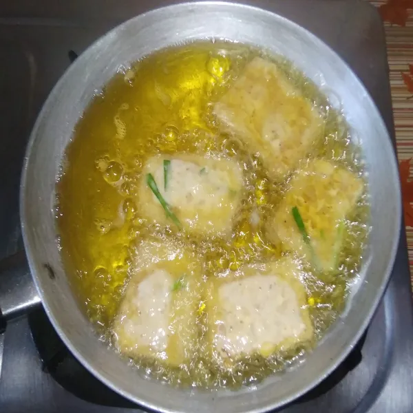

Resep Makanan Indonesia
Portofolio
Tentang Saya
Kontak
Masakan tempe goreng renyah
Total Waktu Penyajian : 30
Penyajian : 5
Judul Resep : Resep tempe goreng renyah
Kategori : Lauk
Masakan : Tempe
Durasi Persiapan : 10 Menit
Durasi Masakan : 20Menit
Total Durasi : 30Menit
Bahan :
- 250 gr tempe bentuk segi empat.
- 75 gr tepung terigu.
- 100 gr tepung beras.
Bumbu tempe goreng :
- 10 bh cabe rawit, iris kasar
- 1 sdt ketumbar bubuk
- 1/2 sdt merica bubuk
- 1 sdt garam
- Minyak secukupnya
Cara membuat :
- Iris tempe melintang tipis. Campurkan tepung terigu, tepung beras, merica, garam hingga ketumbar.


- Panaskan wajan dan celupkan irisan tempe ke dalam adonan tepung hingga merata


- Goreng tempe hingga kekuningan dan matang.



Follow me for more Cooking Receipt here
Selamat mencoba!